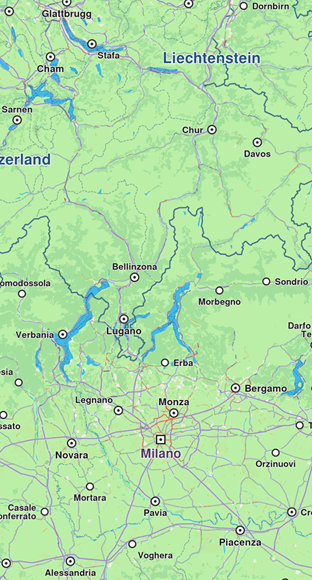
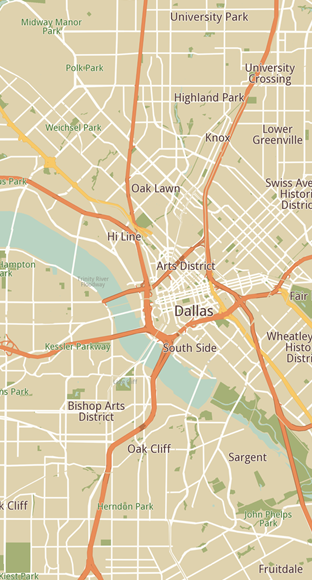

Styling¶
Learn how to customize map appearance using predefined styles or custom styles.
Apply Predefined Styles¶
Predefined map styles must be downloaded before use, as they are not loaded into memory by default. Use the ContentStore class to retrieve and download available styles.
Retrieve a list of all available map styles as a List<ContentStoreItem>:
void getStyles() {
ContentStore.asyncGetStoreContentList(ContentType.viewStyleLowRes,
(err, items, isCached) {
if (err == GemError.success && items.isNotEmpty) {
for (final item in items) {
_stylesList.add(item);
}
ScaffoldMessenger.of(context).clearSnackBars();
}
});
}The asyncGetStoreContentList method can be used to obtain other content such as car models, road maps, TTS voices, and more.
📝 Note: Two types of preview styles are available:
ContentType.viewStyleHighRes- optimized for high-resolution displays (mobile devices)ContentType.viewStyleLowRes- optimized for low-resolution displays (desktop monitors)
The onComplete parameter of the asyncGetStoreContentList method provides:
GemError- indicates whether any errors occurred during the operationList<ContentStoreItem>- contains the retrieved items (empty if error is notGemError.success)boolean- specifies whether the item is already cached or needs downloading
ContentStoreItem Attributes¶
A ContentStoreItem has the following attributes and methods:
| Attribute / Methods | Explanation |
|---|---|
name |
Gets the name of the associated product. |
id |
Get the unique id of the item in the content store. |
chapterName |
Gets the product chapter name translated to interface language. |
countryCodes |
Gets the country code (ISO 3166-1 alpha-3) list of the product as text. |
language |
Gets the full language code for the product. |
type |
Gets the type of the product as a [ContentType] value. |
fileName |
Gets the full path to the content data file when available. |
clientVersion |
Gets the client version of the content. |
totalSize |
Get the size of the content in bytes. |
availableSize |
Gets the available size of the content in bytes. |
isCompleted |
Checks if the item is completed downloaded. |
status |
Gets current item status. |
pauseDownload |
Pause a previous download operation. |
cancelDownload |
Cancel a previous download operation. |
downloadProgress |
Get current download progress. |
canDeleteContent |
Check if associated content can be deleted. |
deleteContent |
Delete the associated content |
isImagePreviewAvailable |
Check if there is an image preview available on the client. |
imgPreview |
Get the preview. The user is responsible to check if the image is valid. |
contentParameters |
Get additional parameters for the content. |
updateItem |
Get corresponding update item. |
isUpdatable |
Check if item is updatable, i.e. it has a newer version available. |
updateSize |
Get update size (if an update is available for this item). |
updateVersion |
Get update version (if an update is available for this item). |
asyncDownload |
Asynchronous start/resume the download of the content store product content. |
🚨 Alert: Certain attributes may not apply to specific types of
ContentStoreItem. For example,countryCodeswill not provide meaningful data forContentType.viewStyleLowRes, as styles are not associated with any country.
Download a style¶
Download a map style by calling ContentStoreItem.asyncDownload():
Future<bool> _downloadStyle(ContentStoreItem style) async {
setState(() {
_isDownloadingStyle = true;
});
Completer<bool> completer = Completer<bool>();
style.asyncDownload((err) {
if (err != GemError.success) {
// An error was encountered during download
completer.complete(false);
setState(() {
_isDownloadingStyle = false;
});
return;
}
// Download was successful
completer.complete(true);
setState(() {
_isDownloadingStyle = false;
});
}, onProgress: (progress) {
// Gets called every time download progresses with a value between [0, 100]
print('progress: $progress');
}, allowChargedNetworks: true);
return await completer.future;
}Apply the downloaded style¶
Apply the downloaded style using GemMapController.MapViewPreferences.setMapStyleByPath(path) with the filename:
final String filename = currentStyle.fileName;
mapController.preferences.setMapStyleByPath(filename);Complete implementation¶
The following code incorporates all steps:
if (_stylesList.isEmpty) {
_showSnackBar(context, message: "The map styles are loading.");
getStyles();
return;
}
final indexOfNextStyle = (_indexOfCurrentStyle >= _stylesList.length - 1)
? 0
: _indexOfCurrentStyle + 1;
ContentStoreItem currentStyle = _stylesList[indexOfNextStyle];
if (currentStyle.isCompleted == false) {
final didDownloadSuccessfully = await _downloadStyle(currentStyle);
if (didDownloadSuccessfully == false) return;
}
_indexOfCurrentStyle = indexOfNextStyle;
final String filename = currentStyle.fileName;
mapController.preferences.setMapStyleByPath(filename);Alternative methods to set styles¶
You can also set map styles using:
MapViewPreferences.setMapStyle()- takes aContentStoreItemof typeContentType.viewStyleHighResorContentType.viewStyleLowResMapViewPreferences.setMapStyleById()- takes the unique id obtained fromContentStoreItem.id
mapController.preferences.setMapStyle(currentStyle);
mapController.preferences.setMapStyleById(currentStyle.id);Apply Custom Styles¶
As part of the SDK package, a ready-to-use and customizable UI is provided. You can create a custom map style in UNL Studio or use the predefined .style file included in the UI library.
Add style file to assets¶
Create an assets directory in the root of your project and place the .style file there. Add the following lines to your pubspec.yaml file under the flutter: section:
flutter:
uses-material-design: true
assets:
- assets/flutter/services.dart package to access the assets directory.
Load style into memory¶
Load the style into memory with the following code:
// Method to load style and return it as bytes
Future<Uint8List> _loadStyle() async {
// Load style into memory
final data = await rootBundle.load('assets/Basic_1_Oldtime-1_21_656.style');
// Convert it to Uint8List
final bytes = data.buffer.asUint8List();
return bytes;
}🚨 Alert: Import
'package:flutter/services.dart'forrootBundle.load()to work.
Apply the custom style¶
Once the map style bytes are obtained, set the style using MapViewPreferences.setMapStyleByBuffer(styleData):
final styleData = await _loadStyle();
mapController.preferences
.setMapStyleByBuffer(styleData, smoothTransition: true);true to the smoothTransition parameter.

Default map style

Custom added map style
Set initial map style¶
Apply a map style when creating a GemMap by providing a relative path to the .style file using the initialMapStyleAsset parameter:
GemMap(
appAuthorization: projectApiToken,
initialMapStyleAsset: "assets/map-styles/my_map_style.style",
),📝 Note: When using
initialMapStyleAsset, the path is relative to the project root and only works on Android and iOS.
Get Notified About Style Changes¶
The user can be notified when the style changes by providing a callback using the registerOnSetMapStyle method from the GemMapController:
controller.registerOnSetMapStyle((id, stylepath, viaApi){
print('The style with id $id and path $stylepath has been set. viaApi: $viaApi');
});The callback provides:
id- the style idstylepath- the path to the .style fileviaApi- indicates if the style was set via API